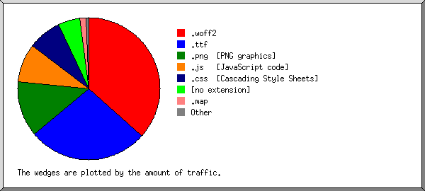

Web Server Statistics for negaclub.ir
Web Server Statistics for negaclub.ir
Program started on Sun, Jan 03 2021 at 3:39 PM.
Analyzed requests from Tue, Sep 22 2020 at 1:19 PM to Sun, Jan 03 2021 at 3:30 PM (103.09 days).
Web Server Statistics for negaclub.irProgram started on Sun, Jan 03 2021 at 3:39 PM.
Analyzed requests from Tue, Sep 22 2020 at 1:19 PM to Sun, Jan 03 2021 at 3:30 PM (103.09 days).
(Go To: Top | General Summary | Monthly Report | Daily Summary | Hourly Summary | Domain Report | Organization Report | Redirected Referrer Report | Failed Referrer Report | Referring Site Report | Browser Report | Browser Summary | Operating System Report | Status Code Report | File Size Report | File Type Report | Directory Report | Request Report)
Figures in parentheses refer to the 7-day period ending Jan 03 2021 at 3:39 PM.
Successful requests: 3,265 (327)
Average successful requests per day: 31 (46)
Successful requests for pages: 74 (25)
Failed requests: 29 (0)
Redirected requests: 123 (0)
Distinct files requested: 163 (259)
Distinct hosts served: 37 (43)
Data transferred: 40.04 megabytes (3.28 megabytes)
Average data transferred per day: 397.72 kilobytes (480.23 kilobytes)
(Go To: Top | General Summary | Monthly Report | Daily Summary | Hourly Summary | Domain Report | Organization Report | Redirected Referrer Report | Failed Referrer Report | Referring Site Report | Browser Report | Browser Summary | Operating System Report | Status Code Report | File Size Report | File Type Report | Directory Report | Request Report)
Each unit ( ) represents 2 requests for pages or part thereof.
) represents 2 requests for pages or part thereof.
| month | #reqs | #pages | |
|---|---|---|---|
| Sep 2020 | 7 | 6 |  |
| Oct 2020 | 207 | 17 |  |
| Nov 2020 | 114 | 4 | |
| Dec 2020 | 2935 | 46 |   |
| Jan 2021 | 2 | 1 | |
Busiest month: Dec 2020 (46 requests for pages).
(Go To: Top | General Summary | Monthly Report | Daily Summary | Hourly Summary | Domain Report | Organization Report | Redirected Referrer Report | Failed Referrer Report | Referring Site Report | Browser Report | Browser Summary | Operating System Report | Status Code Report | File Size Report | File Type Report | Directory Report | Request Report)
Each unit () represents 1 request for a page.
| day | #reqs | #pages | |
|---|---|---|---|
| Sun | 2 | 2 | |
| Mon | 5 | 5 | |
| Tue | 2920 | 40 |  |
| Wed | 90 | 6 | |
| Thu | 43 | 4 | |
| Fri | 9 | 9 | |
| Sat | 196 | 8 | |
(Go To: Top | General Summary | Monthly Report | Daily Summary | Hourly Summary | Domain Report | Organization Report | Redirected Referrer Report | Failed Referrer Report | Referring Site Report | Browser Report | Browser Summary | Operating System Report | Status Code Report | File Size Report | File Type Report | Directory Report | Request Report)
Each unit () represents 1 request for a page.
| hour | #reqs | #pages | |
|---|---|---|---|
| 0 | 2 | 2 | |
| 1 | 1 | 1 | |
| 2 | 0 | 0 | |
| 3 | 0 | 0 | |
| 4 | 1 | 1 | |
| 5 | 2 | 1 | |
| 6 | 2 | 2 | |
| 7 | 3 | 2 | |
| 8 | 0 | 0 | |
| 9 | 247 | 8 | |
| 10 | 255 | 6 | |
| 11 | 227 | 22 | |
| 12 | 992 | 3 | |
| 13 | 36 | 2 | |
| 14 | 588 | 4 | |
| 15 | 319 | 2 | |
| 16 | 107 | 6 | |
| 17 | 471 | 4 | |
| 18 | 6 | 2 | |
| 19 | 1 | 1 | |
| 20 | 1 | 1 | |
| 21 | 0 | 0 | |
| 22 | 4 | 4 | |
| 23 | 0 | 0 |
(Go To: Top | General Summary | Monthly Report | Daily Summary | Hourly Summary | Domain Report | Organization Report | Redirected Referrer Report | Failed Referrer Report | Referring Site Report | Browser Report | Browser Summary | Operating System Report | Status Code Report | File Size Report | File Type Report | Directory Report | Request Report)
Listing domains, sorted by the amount of traffic.
| #reqs | %bytes | domain |
|---|---|---|
| 3265 | 100% | [unresolved numerical addresses] |
(Go To: Top | General Summary | Monthly Report | Daily Summary | Hourly Summary | Domain Report | Organization Report | Redirected Referrer Report | Failed Referrer Report | Referring Site Report | Browser Report | Browser Summary | Operating System Report | Status Code Report | File Size Report | File Type Report | Directory Report | Request Report)
Listing the top 20 organizations by the number of requests, sorted by the number of requests.
| #reqs | %bytes | organization |
|---|---|---|
| 3226 | 99.56% | 5 |
| 8 | 0.28% | 209.17 |
| 5 | 138.246 | |
| 5 | 0.01% | 69 |
| 3 | 62.102 | |
| 3 | 0.03% | 66.249 |
| 2 | 0.09% | 167.71 |
| 1 | 159.203 | |
| 1 | 165.227 | |
| 1 | 157.245 | |
| 1 | 51 | |
| 1 | 45 | |
| 1 | 212.16 | |
| 1 | 62.4 | |
| 1 | 46 | |
| 1 | 37 | |
| 1 | 138.197 | |
| 1 | 192.40 | |
| 1 | 142.93 | |
| 1 | 104 |
(Go To: Top | General Summary | Monthly Report | Daily Summary | Hourly Summary | Domain Report | Organization Report | Redirected Referrer Report | Failed Referrer Report | Referring Site Report | Browser Report | Browser Summary | Operating System Report | Status Code Report | File Size Report | File Type Report | Directory Report | Request Report)
Listing referring URLs, sorted by the number of redirected requests.
| #reqs | URL |
|---|---|
| 21 | https://negaclub.ir/admin/ |
| 1 | https://negaclub.ir/admin/Providers |
(Go To: Top | General Summary | Monthly Report | Daily Summary | Hourly Summary | Domain Report | Organization Report | Redirected Referrer Report | Failed Referrer Report | Referring Site Report | Browser Report | Browser Summary | Operating System Report | Status Code Report | File Size Report | File Type Report | Directory Report | Request Report)
Listing referring URLs, sorted by the number of failed requests.
(Go To: Top | General Summary | Monthly Report | Daily Summary | Hourly Summary | Domain Report | Organization Report | Redirected Referrer Report | Failed Referrer Report | Referring Site Report | Browser Report | Browser Summary | Operating System Report | Status Code Report | File Size Report | File Type Report | Directory Report | Request Report)
Listing referring sites, sorted by the number of requests.
| #reqs | site |
|---|---|
| 2938 | https://negaclub.ir/ |
| 3 | https://trustseal.enamad.ir/ |
| 2 | http://negaclub.ir:2082/ |
(Go To: Top | General Summary | Monthly Report | Daily Summary | Hourly Summary | Domain Report | Organization Report | Redirected Referrer Report | Failed Referrer Report | Referring Site Report | Browser Report | Browser Summary | Operating System Report | Status Code Report | File Size Report | File Type Report | Directory Report | Request Report)
Listing browsers with at least 1 request for a page, sorted by the number of requests for pages.
| #reqs | #pages | browser |
|---|---|---|
| 321 | 21 | Mozilla/5.0 (Macintosh; Intel Mac OS X 10_15_7) AppleWebKit/537.36 (KHTML, like Gecko) Chrome/87.0.4280.88 Safari/537.36 |
| 2596 | 12 | Mozilla/5.0 (Windows NT 10.0; Win64; x64) AppleWebKit/537.36 (KHTML, like Gecko) Chrome/87.0.4280.88 Safari/537.36 |
| 8 | 8 | Mozilla/5.0 (compatible; Nimbostratus-Bot/v1.3.2; http://cloudsystemnetworks.com) |
| 5 | 5 | Mozilla/5.0 (Windows NT 6.1; Win64; x64) AppleWebKit/537.36 (KHTML, like Gecko) Chrome/40.0.2214.85 Safari/537.36 |
| 5 | 5 | Mozilla/5.0 (Windows N\\T 10.0; WOW64) AppleWebKit/537.36 (KHTML, like Gecko) Chrome/67.0.3396.79 Safari/537.16 |
| 4 | 4 | Mozilla/5.0 (compatible; NetcraftSurveyAgent/1.0; +info@netcraft.com) |
| 3 | 3 | Python/3.6 aiohttp/3.6.3 |
| 2 | 2 | Mozilla/5.0 (X11; Ubuntu; Linux x86_64; rv:58.0) Gecko/20100101 Firefox/58.0 |
| 2 | 2 | Mozilla/5.0 (Macintosh; Intel Mac OS X 10_10_5) AppleWebKit/537.36 (KHTML, like Gecko) Chrome/45.0.2454.101 Safari/537.36 |
| 2 | 2 | Mozilla/5.0 (X11; Linux x86_64) AppleWebKit/537.36 (KHTML, like Gecko) Chrome/41.0.2227.0 Safari/537.36 |
| 3 | 1 | Mozilla/5.0 (Macintosh; Intel Mac OS X 10_15_7) AppleWebKit/537.36 (KHTML, like Gecko) Chrome/86.0.4240.198 Safari/537.36 |
| 2 | 1 | Mozilla/5.0 (Linux; Android 6.0.1; Nexus 5X Build/MMB29P) AppleWebKit/537.36 (KHTML, like Gecko) Chrome/87.0.4280.90 Mobile Safari/537.36 (compatible; Googlebot/2.1; +http://www.google.com/bot.html) |
| 4 | 1 | Mozilla/5.0 (Windows NT 6.3; Win64; x64) AppleWebKit/537.36 (KHTML, like Gecko) Chrome/86.0.4240.75 Safari/537.36 |
| 1 | 1 | Mozilla/5.0 (Windows NT 10.0; Win64; x64) AppleWebKit/537.36 (KHTML, like Gecko) Chrome/85.0.4183.121 Safari/537.36 |
| 1 | 1 | Mozilla/5.0 (Windows NT 6.3; WOW64) AppleWebKit/537.36 (KHTML, like Gecko) Chrome/41.0.2225.0 Safari/537.36 |
| 5 | 1 | Mozilla/5.0 (Linux; Android 6.0; Nexus 5 Build/MRA58N) AppleWebKit/537.36 (KHTML, like Gecko) Chrome/87.0.4280.88 Mobile Safari/537.36 |
| 1 | 1 | Mozilla/5.0 (Windows NT 10.0; WOW64) AppleWebKit/537.36 (KHTML, like Gecko) Chrome/20.0.1132.57 Safari/537.36 |
| 1 | 1 | curl/7.68.0 |
| 1 | 1 | Mozilla/5.0 (Windows NT 5.1) AppleWebKit/537.36 (KHTML, like Gecko) Chrome/41.0.2224.3 Safari/537.36 |
| 109 | 1 | PostmanRuntime/7.26.7 |
| 188 | 0 | [not listed: 2 browsers] |
(Go To: Top | General Summary | Monthly Report | Daily Summary | Hourly Summary | Domain Report | Organization Report | Redirected Referrer Report | Failed Referrer Report | Referring Site Report | Browser Report | Browser Summary | Operating System Report | Status Code Report | File Size Report | File Type Report | Directory Report | Request Report)
Listing browsers with at least 1 request for a page, sorted by the number of requests for pages.
| # | #reqs | #pages | browser |
|---|---|---|---|
| 1 | 3136 | 55 | Safari |
| 3136 | 55 | Safari/537 | |
| 2 | 12 | 12 | Netscape (compatible) |
| 3 | 3 | 3 | Python |
| 3 | 3 | Python/3 | |
| 4 | 2 | 2 | Firefox |
| 2 | 2 | Firefox/58 | |
| 5 | 1 | 1 | curl |
| 1 | 1 | curl/7 | |
| 6 | 109 | 1 | PostmanRuntime |
| 109 | 1 | PostmanRuntime/7 | |
| 1 | 0 | [not listed: 1 browser] |
(Go To: Top | General Summary | Monthly Report | Daily Summary | Hourly Summary | Domain Report | Organization Report | Redirected Referrer Report | Failed Referrer Report | Referring Site Report | Browser Report | Browser Summary | Operating System Report | Status Code Report | File Size Report | File Type Report | Directory Report | Request Report)
Listing operating systems, sorted by the number of requests for pages.
| # | #reqs | #pages | OS |
|---|---|---|---|
| 1 | 2614 | 27 | Windows |
| 2598 | 14 | Windows NT | |
| 15 | 12 | Unknown Windows | |
| 1 | 1 | Windows XP | |
| 2 | 513 | 24 | Macintosh |
| 3 | 125 | 17 | OS unknown |
| 4 | 11 | 6 | Unix |
| 11 | 6 | Linux | |
| 5 | 1 | 0 | Known robots |
(Go To: Top | General Summary | Monthly Report | Daily Summary | Hourly Summary | Domain Report | Organization Report | Redirected Referrer Report | Failed Referrer Report | Referring Site Report | Browser Report | Browser Summary | Operating System Report | Status Code Report | File Size Report | File Type Report | Directory Report | Request Report)
Listing status codes, sorted numerically.
| #reqs | status code |
|---|---|
| 3264 | 200 OK |
| 101 | 301 Document moved permanently |
| 22 | 302 Document found elsewhere |
| 1 | 304 Not modified since last retrieval |
| 2 | 403 Access forbidden |
| 25 | 404 Document not found |
| 2 | 500 Internal server error |
(Go To: Top | General Summary | Monthly Report | Daily Summary | Hourly Summary | Domain Report | Organization Report | Redirected Referrer Report | Failed Referrer Report | Referring Site Report | Browser Report | Browser Summary | Operating System Report | Status Code Report | File Size Report | File Type Report | Directory Report | Request Report)
| size | #reqs | %bytes |
|---|---|---|
| 0 | 372 | |
| 1B- 10B | 6 | |
| 11B- 100B | 83 | 0.01% |
| 101B- 1kB | 871 | 0.85% |
| 1kB- 10kB | 1154 | 10.10% |
| 10kB-100kB | 710 | 61.83% |
| 100kB- 1MB | 69 | 27.21% |
(Go To: Top | General Summary | Monthly Report | Daily Summary | Hourly Summary | Domain Report | Organization Report | Redirected Referrer Report | Failed Referrer Report | Referring Site Report | Browser Report | Browser Summary | Operating System Report | Status Code Report | File Size Report | File Type Report | Directory Report | Request Report)

Listing extensions with at least 0.1% of the traffic, sorted by the amount of traffic.
| #reqs | %bytes | extension |
|---|---|---|
| 415 | 36.57% | .woff2 |
| 69 | 27.21% | .ttf |
| 163 | 12.67% | .png [PNG graphics] |
| 867 | 8.94% | .js [JavaScript code] |
| 426 | 7.60% | .css [Cascading Style Sheets] |
| 1133 | 4.95% | [no extension] |
| 44 | 1.52% | .map |
| 74 | 0.53% | [directories] |
| 74 | 0.01% | [not listed: 4 extensions] |
(Go To: Top | General Summary | Monthly Report | Daily Summary | Hourly Summary | Domain Report | Organization Report | Redirected Referrer Report | Failed Referrer Report | Referring Site Report | Browser Report | Browser Summary | Operating System Report | Status Code Report | File Size Report | File Type Report | Directory Report | Request Report)
Listing directories with at least 0.01% of the traffic, sorted by the amount of traffic.
| #reqs | %bytes | directory |
|---|---|---|
| 3202 | 99.52% | /admin/ |
| 44 | 0.43% | [root directory] |
| 13 | 0.03% | /_autoindex/ |
| 4 | 0.01% | /doc/ |
| 1 | 0.01% | /images/ |
| 1 | [not listed: 1 directory] |
(Go To: Top | General Summary | Monthly Report | Daily Summary | Hourly Summary | Domain Report | Organization Report | Redirected Referrer Report | Failed Referrer Report | Referring Site Report | Browser Report | Browser Summary | Operating System Report | Status Code Report | File Size Report | File Type Report | Directory Report | Request Report)
Listing files with at least 20 requests, sorted by the number of requests.
| #reqs | %bytes | last time | file |
|---|---|---|---|
| 354 | 0.10% | Dec/22/20 5:37 PM | /admin/fwTools/controller/modelGenerator/modelGenerator |
| 164 | 0.67% | Dec/22/20 5:36 PM | /admin/fwTools/view/modelGenerator/modelGenerator |
| 79 | 2.63% | Dec/29/20 10:45 AM | /admin/favicon.png |
| 73 | 0.05% | Nov/12/20 12:21 PM | /admin/Clients/API/_walletHistory |
| 71 | 5.58% | Dec/29/20 10:45 AM | /admin/src/dist/css/adminlte.min.css |
| 71 | 1.13% | Dec/29/20 10:45 AM | /admin/src/plugins/font-awesome/css/font-awesome.min.css |
| 71 | 6.43% | Dec/29/20 10:45 AM | /admin/src/dist/fonts/Vazir.woff2 |
| 71 | 0.29% | Dec/29/20 10:45 AM | /admin/src/dist/css/persian-datepicker.min.css |
| 71 | 0.42% | Dec/29/20 10:45 AM | /admin/src/dist/css/custom-style.css |
| 71 | 0.02% | Dec/29/20 10:45 AM | /admin/src/dist/css/spinner.css |
| 71 | 0.17% | Dec/29/20 10:45 AM | /admin/src/dist/css/bootstrap-rtl.min.css |
| 69 | 8.42% | Dec/29/20 10:45 AM | /admin/src/dist/fonts/Vazir-Medium.woff2 |
| 69 | Dec/29/20 10:45 AM | /admin/src/plugins/font-awesome/fonts/fontawesome-webfont.woff2 | |
| 69 | Dec/29/20 10:45 AM | /admin/src/plugins/font-awesome/fonts/fontawesome-webfont.woff2?v=4.7.0 | |
| 69 | Dec/29/20 10:45 AM | /admin/src/plugins/font-awesome/fonts/fontawesome-webfont.woff | |
| 69 | Dec/29/20 10:45 AM | /admin/src/plugins/font-awesome/fonts/fontawesome-webfont.woff?v=4.7.0 | |
| 69 | 6.88% | Dec/29/20 10:45 AM | /admin/src/dist/fonts/Vazir-Bold.woff2 |
| 69 | 27.21% | Dec/29/20 10:45 AM | /admin/src/plugins/font-awesome/fonts/fontawesome-webfont.ttf |
| 69 | 27.21% | Dec/29/20 10:45 AM | /admin/src/plugins/font-awesome/fonts/fontawesome-webfont.ttf?v=4.7.0 |
| 69 | 7.99% | Dec/29/20 10:45 AM | /admin/src/dist/fonts/Vazir-Light.woff2 |
| 68 | 6.85% | Dec/29/20 10:45 AM | /admin/src/dist/fonts/Vazir-Black.woff2 |
| 67 | Dec/22/20 3:28 PM | /admin/fwTools/controller/formGenerator/formGenerator | |
| 66 | 9.74% | Dec/29/20 10:45 AM | /admin/src/dist/images/CompanyLogo.png |
| 55 | 0.10% | Dec/29/20 10:45 AM | /admin/src/dist/js/autocomplete.js |
| 55 | 0.15% | Dec/29/20 10:45 AM | /admin/src/dist/js/tables.js |
| 55 | 1.94% | Dec/29/20 10:45 AM | /admin/src/dist/js/persian-datepicker.min.js |
| 55 | 0.50% | Dec/29/20 10:45 AM | /admin/src/dist/js/adminlte.js |
| 55 | 0.02% | Dec/29/20 10:45 AM | /admin/src/dist/js/Shortcuts/Shortcuts.js |
| 55 | 0.02% | Dec/29/20 10:45 AM | /admin/src/dist/js/fw_tags/src/funcs.js |
| 55 | 3.00% | Dec/29/20 10:45 AM | /admin/src/dist/js/moment/moment.min.js |
| 55 | 0.30% | Dec/29/20 10:45 AM | /admin/src/dist/js/fw_js.js |
| 55 | 0.35% | Dec/29/20 10:45 AM | /admin/src/dist/js/pages/dashboard2.js |
| 55 | 0.17% | Dec/29/20 10:45 AM | /admin/src/dist/js/submit.js |
| 55 | 0.05% | Dec/29/20 10:45 AM | /admin/src/dist/js/fw_tags/fw_tags.js |
| 55 | 0.21% | Dec/29/20 10:45 AM | /admin/src/dist/js/demo.js |
| 55 | 0.72% | Dec/29/20 10:45 AM | /admin/src/dist/js/check.js |
| 55 | 1.29% | Dec/29/20 10:45 AM | /admin/src/dist/js/persian-date.min.js |
| 45 | 0.86% | Dec/29/20 11:03 AM | /admin/controllers/Providers/Providers |
| 41 | 0.43% | Jan/ 3/21 3:30 PM | / |
| 38 | 0.32% | Dec/22/20 3:28 PM | /admin/fwTools/view/formGenerator/formGenerator |
| 29 | 0.45% | Dec/22/20 5:42 PM | /admin/modelGenerator |
| 25 | 0.05% | Dec/29/20 10:53 AM | /admin/src/dist/js/final_submit.js |
| 25 | 0.02% | Dec/29/20 10:53 AM | /admin/src/dist/js/selectIcon.js |
| 24 | 0.01% | Dec/29/20 10:45 AM | /admin/src/dist/css/persian-datepicker.min.css.map |
| 21 | 0.02% | Dec/29/20 11:03 AM | /admin/src/images/States/ |
| 21 | 0.01% | Dec/29/20 11:03 AM | /admin/js/Providers/Providers.view.add|edit.js |
| 20 | 1.51% | Dec/29/20 10:45 AM | /admin/src/dist/js/adminlte.js.map |
| 20 | 0.13% | Dec/31/20 12:56 PM | /admin/controllers/Startups/Startups/Startups |
| 20 | 0.02% | Nov/11/20 9:25 AM | /admin/WebServiceApp/API/_walletHistory |
| 384 | 2.75% | Jan/ 2/21 5:21 AM | [not listed: 77 files] |